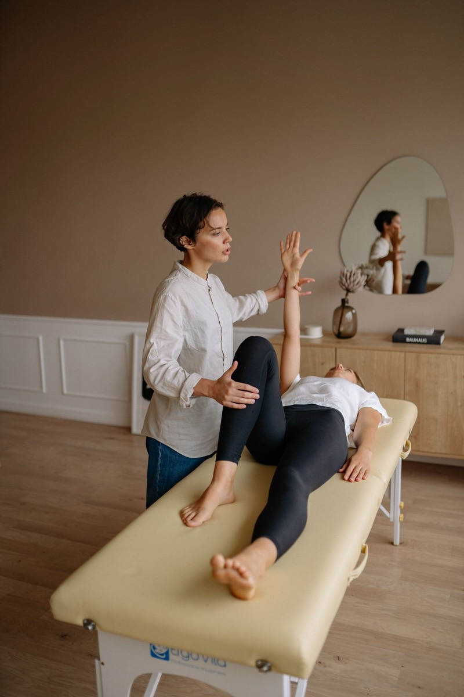
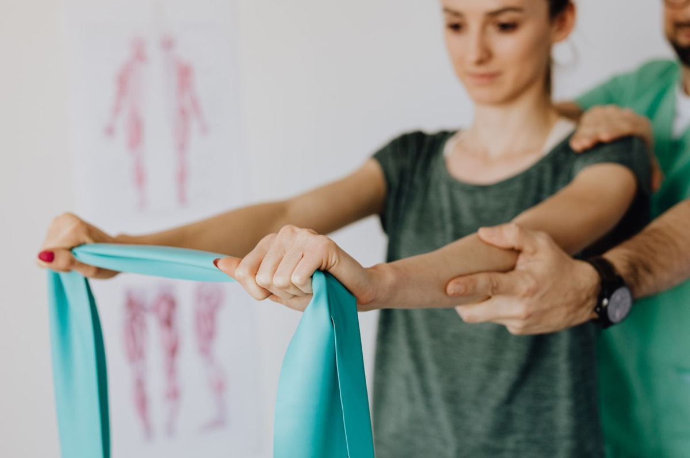
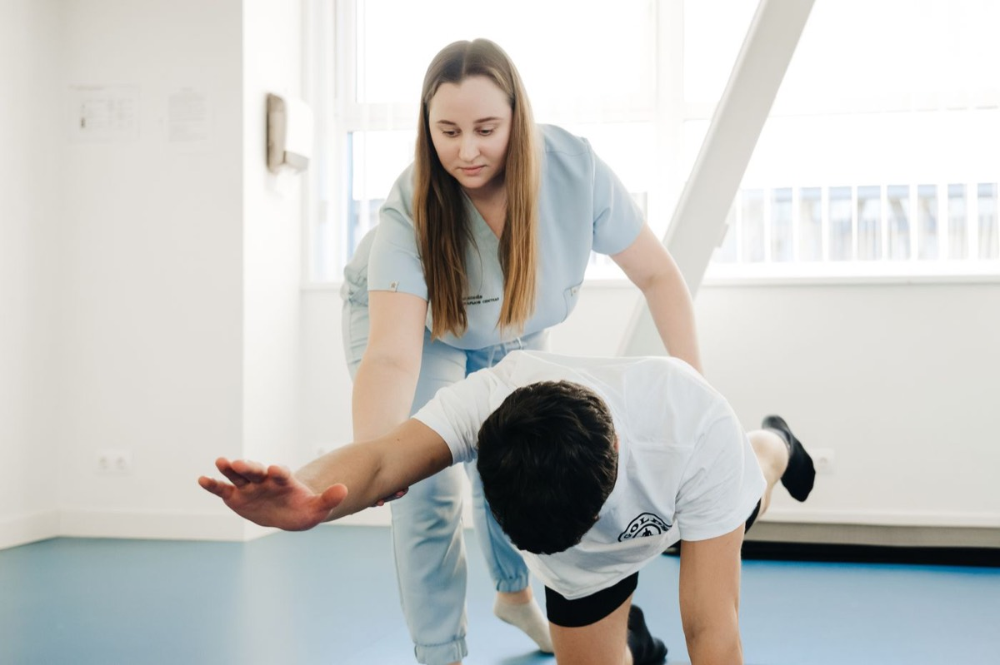

Próximo horário livre
quarta, 22 de outubro, 16h

Dor lombar e cervical, hérnia de disco e travamento. A primeira meta é dormir sem dor.
Condromalácia, artrose e reabilitação depois de prótese ou ligamento.
Tendinite, bursite e ombro congelado. Exercício com carga medida a cada semana.
Começa na semana da alta, com o laudo do cirurgião em mãos.


Você conta onde dói e desde quando. A gente mede força, amplitude e postura.
Número de sessões, objetivo de cada fase e três exercícios pra fazer em casa.
Sem dividir o horário com outro paciente. O plano é revisto a cada quatro sessões.
Avaliação, R$ 180